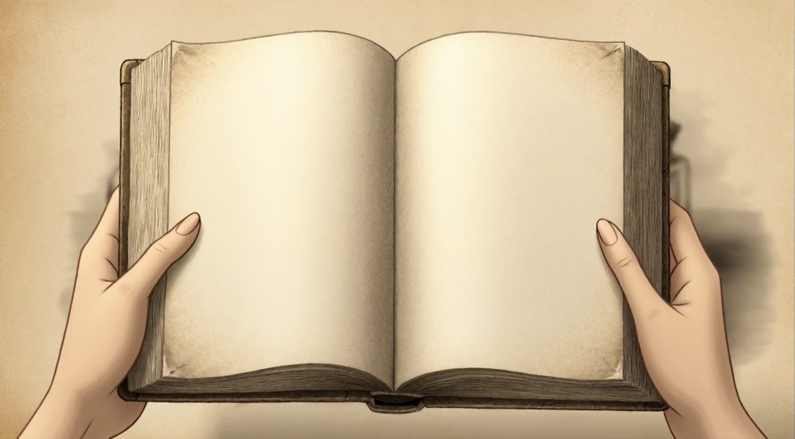

Ein interaktives Leseerlebnis

Scanne den Code oder öffne das Tor
Wähle dein Fragment — Jede Kombination erzählt eine andere Geschichte
Die Nacht legte sich über die Stadt wie ein Samtgewebe, das jede Bewegung verschluckte. Ich stand am Fenster und beobachtete das Licht der Laternen, wie es sich in den Pfützen des gerade vergangenen Regens brach.
Ein Geräusch hinter mir. Das Rascheln von Seide, vielleicht. Oder nur der Wind, der durch die Ritzen der alten Fensterfugen strich. Ich drehte mich nicht um. In dieser Stunde zwischen Mitternacht und Morgengrauen wagte niemand, sich zu rühren.
Doch dann — ein Atemzug. Näher als der Wind. Wärmer als die Kälte, die von den Steinwänden ausging. Jemand war hier. Jemand, der genauso lange wartete wie ich.
Seite 47 / 312
Atmosphärische Klangwelten — Die Geschichte spricht zu dir
Gib deiner Geschichte eine Stimme — Die Fragmente führen dich
"Schreibe die ersten Worte eines Briefes, den du niemals abschicken wirst..."
Dein Gedächtnis — Jeder Moment hinterlässt eine Spur
Memory-Graph Visualisierung
(Canvas-Graph wird hier gerendert)